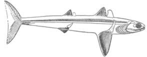
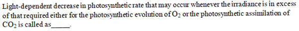
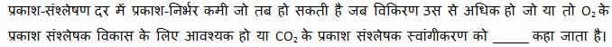

The membrane and the protoplasm it contains are collectively referred to as _________. इसमें मौजूद झिल्लीी और प्रोोटोप्लााज्म को सामूहिक रूप से _________ कहा जाता है।
ANucleosome न्यूक्लियोसोम
BCell wall सेल वाल
CApoplast एपोप्लाास्ट
DProtoplast प्रोोटोप्लाास्ट
EXPLANATIONCorrect Answer: D
The correct answer is D because it matches the definition: Protoplast प्रोोटोप्लाास्ट .
Question 2ID: 2612948Page: 1
_______is a benzoquinone and its structure and function are similar to the plastoquinone found in the thylakoid membranes of chloroplasts. _______ एक बेंजोक्विनोन है और इसकी संरचना और कार्य क्लोोरोप्लाास्ट के थायलाकोइड झिल्लीी में पाए जाने वाले प्लाास्टोोक्विनोन के समान हैं।
AHydroquinone हाइड्रोोक्विनोन
BQuinolones क्विनोलोन
CUbiquinone यूबिकिनोन
DCytochrome c साइटोक्रोोम c
EXPLANATIONCorrect Answer: C
The correct answer is C because it matches the definition: Ubiquinone यूबिकिनोन .
Question 3ID: 2612949Page: 2
Which among the following is not an abiotic stress? निम्नलिखित में से कौन सा अजैविक तनाव नहीं है?
ALight रोशनी
BTemperature तापमान
CMoisture नमी
DInsect कीड़ाा
EXPLANATIONCorrect Answer: D
The correct answer is D because it matches the definition: Insect कीड़ाा .
Question 4ID: 2612963Page: 2
At germination the testa is ruptured and the seedling radicle emerges through which end? अंकुरण के समय अंडकोष फट जाता है और सीडलिंग रेडिकल किस सिरे से निकलता है?
AMicropylar माइक्रोोपाइलर
BChalaza चालजा
CCentre केंद्र
DStigmatic स्टिगमैटिक
EXPLANATIONCorrect Answer: A
The correct answer is A because it matches the definition: Micropylar माइक्रोोपाइलर .
Question 5ID: 2612964Page: 3
Pollen tubes, though typically unbranched, can become branched in which of the following species? पराग नलिकाएं, हालांकि आम तौर पर अशाखित होती हैं, निम्नलिखित में से किस प्रजाति में शाखित हो सकती हैं?
AGrevillea ग्रेविल्ले
BAelo vera एलो वेरा
CSagittaria सगीट्टाारिआ
DSantalum सैंटलम
EXPLANATIONCorrect Answer: A
The correct answer is A because it matches the definition: Grevillea ग्रेविल्ले .
Question 6ID: 2612988Page: 3
The smallest group of organisms that is diagnostically distinct from other such clusters and within which there is parental pattern of ancestry and descent is called? जीवों का सबसे छोटा समूह जो ऐसे अन्य समूहों से नैदानिक रूप से भिन्न होता है और जिसके भीतर वंश और वंश का पेरेन्टल पैटर्न होता है, कहलाता है?
APhylogenetic species फाइलोजेनेटिक प्रजाति
BCohesion species सामंजस्य प्रजाति
CRecognition species रिकग्निशन प्रजाति
DEcological species पारिस्थितिक प्रजातत
EXPLANATIONCorrect Answer: A
The correct answer is A because it matches the definition: Phylogenetic species फाइलोजेनेटिक प्रजाति .
Question 7ID: 2612998Page: 3
Which among the followings is not a seed enhancement technology? निम्नलिखित में से कौन सी बीज वृद्ध तकनीक नहीं है?
ASeed coating बीज का लेप
BDrying सुखना
CHydration treatments हाइड्रेेशन ट्रीीटमेंट
DGel mixtures with growth promoting compounds विकास को बढ़ाावा देने वाले यौगिकों के साथ जेल मिश्रण
EXPLANATIONCorrect Answer: B
The correct answer is B because it matches the definition: Drying सुखना .
Question 8ID: 2613013Page: 4
Which enzymes identify specific nucleotide sequences in DNA of 4– 8 bp, usually palindromes, and cleave specific phosphodiester bonds in each strand of the DNA? कौन-से एंजाइम 4-8 बीपी के डीएनए में विशिष्ट न्यूक्लियोटाइड अनुक्रमों की पहचान करते हैं, आमतौर पर पैलिंड्रोोम, और डीएनए के प्रत्येक स्ट्रैंड में विशिष्ट फॉस्फोोडिएस्टर बांड को काटते हैं?
ARestriction enzymes प्रतिबंधित एंजाइम
BLipase enzyme लाइपेज एंजाइम
CHelicase enzyme हेलिकेज़ एंजाइम
DGyrase enzyme गाइरेस एंजाइम
EXPLANATIONCorrect Answer: A
The correct answer is A because it matches the definition: Restriction enzymes प्रतिबंधित एंजाइम .
Question 9ID: 2613029Page: 4
Ozone only enters the leaf through_________. ओजोन केवल _______ द्वाारा पत्तीी में प्रवेश करती है।
AStomata स्टोोमेटा
BLamina लामिना
CLeaf margin लीफ मार्जिन
DVein वीन
EXPLANATIONCorrect Answer: A
The correct answer is A because it matches the definition: Stomata स्टोोमेटा .
Question 10ID: 2613038Page: 5
Who developed column liquid chromatography? कॉलम लिक्विड क्रोोमैटोग्रााफी का विकास किसने किया था?
AEd Southern एड सदर्न
BMikhail Tswett मिखाइल ट्वेट
CBurnard Kipling बर्नार्ड किपलिंग
DTheodor Schwann थियोडोर श्वाान
EXPLANATIONCorrect Answer: B
The correct answer is B because it matches the definition: Mikhail Tswett मिखाइल ट्वेट .
Question 11ID: 2613048Page: 5
Which of the following material is not used to make HPLC column? एचपीएलसी कॉलम बनाने के लिए निम्नलिखित में से किस सामग्रीी का उपयोग नहीं किया जाता है?
APolyethylene पॉलीएथीलिन
BGlass काँच
CSteel इस्पाात
DNichrome निक्रोोम
EXPLANATIONCorrect Answer: D
The correct answer is D because it matches the definition: Nichrome निक्रोोम .
Question 12ID: 2613063Page: 6
What is not true about Commelinaceae family? कमेलिनेसी कुल के बारे में क्याा सत्य नहीं है ?
AWidespread in tropical, subtropical and warm temperate regions. उष्णकटिबंधीय, उपोष्णकटिबंधीय और गर्म समशीतोष्ण क्षेत्रोंों में व्याापक।
BLeaves alternate, simple, entire, flat or folded V-shaped in cross section, leaf sheath closed at base, venation parallel, stomata tetracytic, stipules absent. अनुप्रस्थ काट में एकांतर, सरल, संपूर, चपटी या मुड़ीी हुई वी- आकार की पत्तियाँ, आधार पर पत्तीी म्याान बंद, शिराविन्याास समानांतर, स्टोोमेटा टेट्राासाइटिक, स्टााइपुल्स अनुपस्थित।
CInflorescence a helicoid cyme at the end of stem in leaf axil, sometimes solitary, subtended by spathaceous bracts. पुष्पक्रम पत्तीी की धुरी में तने के अंत में एक हेलिकॉइड साइम, कभी-कभी एकान्त, स्पैथेसियस ब्रैक्ट्स द्वाारा घटाया जाता है।
DFlowers always unisexualactinomorphic (zygomorphic in Commelina), perigynous. फूल हमेशा उभयलिंगी एक्टिनोमॉर्फिक (कोमेलिना में जाइगोमॉर्फिक), पेरिगिनस।
EXPLANATIONCorrect Answer: D
The correct answer is D because it matches the definition: Flowers always unisexualactinomorphic (zygomorphic in Commelina), perigynous. फूल हमेशा उभयलिंगी एक्टिनोमॉर्फिक (कोमेलिना में जाइगोमॉर्फिक), पेरिगिनस। .
Question 13ID: 2613078Page: 6
When starch is heated directly, or is treated with dilute acids or enzymes, it becomes converted into a tasteless, white, amorphous solid known as______. जब स्टाार्च को सीधे गर्म किया जाता है, या तनु अम्लोंों या एंजाइमों के साथ ट्रिट किया जाता है, तो यह एक बेस्वााद, सफेद, अनाकार ठोस में परिवर्तित हो जाता है जिसे ______ के रूप में जाना जाता है।
AArrowroot Starch अरारोट स्टाार्च
BSoluble starch घुलनशील स्टाार्च
CDextrin डेक्सट्रिन
DNitro starch नाइट्रोो स्टाार्च
EXPLANATIONCorrect Answer: C
The correct answer is C because it matches the definition: Dextrin डेक्सट्रिन .
Question 14ID: 2615910Page: 7
_________carry material in the direction opposing equilibrium. _________ सामग्रीी को संतुलन के विपरीत दिशा में ले जाता है।
The correct answer is D because it matches the definition: Active-transport mechanisms सक्रिय- ट्रांांसपोर्ट तंत्र .
Question 15ID: 2615914Page: 7
Lipids are carried throughout the body by way of the lymphatic and circulatory systems in the form of _______. लिपिड पूरे शरीर में लसीका और संचार प्रणाली के माध्यम से _______ के रूप में ले जाते हैं।
AChylomicrons काइलोमाइक्रोोन
BCytokines साइटोकिन्स
CProenzymes प्रोोएंजाइम
DVacuoles वेक्यूओल्स
EXPLANATIONCorrect Answer: A
The correct answer is A because it matches the definition: Chylomicrons काइलोमाइक्रोोन .
Question 16ID: 2615934Page: 7
If an individual has a probability of 0.5 of sharing the allele with its parent, offspring or sibling, a probability of 0.25 of sharing it with a grandparent or grandchild, of 0.125 of sharing it with a first cousin and so on. This probability is referred to as the ____________. यदि किसी व्यक्ति के पास एलील को अपने माता-पिता, संतान या भाई-बहन के साथ साझा करने की 0.5 की संभावना है, तो इसे दादा-दादी या पोते के साथ साझा करने की 0.25 की संभावना है, इसे पहले चचेरे भाई के साथ साझा करने की 0.125 की संभावना है। इस संभावना को ____________ कहा जाता है।
ANumber of offspring संतानों की संख्याा
BMeasure of reproductive success प्रजनन सफलता का उपाय
CInclusive fitness समावेशी फिटनेस
DCoefficient of relatedness (r) संबंधितता का गुणांक (r)
EXPLANATIONCorrect Answer: D
The correct answer is D because it matches the definition: Coefficient of relatedness (r) संबंधितता का गुणांक (r) .
Question 17ID: 2615950Page: 8
Which of the following is not a fundamental structure found in phylum Chordata? निम्नलिखित में से कौन सी मौलिक संरचना, फाइलम कॉर्डेटा में नहीं पायी जाती?

ANotochord पृष्ठरज्जु (नोटकॉर्ड)
BBranchial clefts ब्राान्चियल क्लेफ्ट
CCentral nervous system केंद्रीीय तंत्रिका तंत्र
DGills गलफड़ाा
EXPLANATIONCorrect Answer: D
The correct answer is D because it matches the definition: Gills गलफड़ाा .
Question 18ID: 2615960Page: 8
The organism depicted in the figure given below belongs to which family? नीचे दी गई आकृति में दर्शाया गया जीव किस कुल का है?
ACladoselache क्लैडोसेलैश
BBranchiostomidae ब्रैंकि ओस्टोोमिडे
CAmphioxidae एम्फ़ॉॉक्सिडे
DLepospondyli लेपोस्पोंोंडिली
EXPLANATIONCorrect Answer: A
The correct answer is A because it matches the definition: Cladoselache क्लैडोसेलैश .
Question 19ID: 2615970Page: 9
__________is the raising of egg-laying chicken egg production. __________ अंडे देने वाली मुर्गी के अंडे के उत्पाादन को बढ़ााना है।
ABroilers ब्रॉॉइलर
BLayer farming लेयर फार्मिंग
CDual farming दोहरी फार्मिंग
DApiculture मधुमक्खीी पालन
EXPLANATIONCorrect Answer: B
The correct answer is B because it matches the definition: Layer farming लेयर फार्मिंग .
Question 20ID: 2615985Page: 9
A major function of the distal convoluted tubule in many amphibians—a function that may be shared by the collecting ducts and urinary bladder—is control of the excretion of pure water, often termed_________. कई उभयचरों में डिस्टल कन्वोोल्यूटेड ट्यूब्यूल का एक प्रमुख कार्य - एक ऐसा कार्य जो एकत्रित नलिकाओं और मूत्रााशय द्वाारा साझा किया जा सकता है - शुद्ध पानी के उत्सर्जन का नियंत्रण है, जिसे अक्सर _________ कहा जाता है।
ADeionized water विआयनित जल
BBrownian water ब्रााउनियन पानी
CNewtonian fluid न्यूटोनियन द्रव
DOsmotically free water आसमाटिक रूप से मुक्त पानी
EXPLANATIONCorrect Answer: D
The correct answer is D because it matches the definition: Osmotically free water आसमाटिक रूप से मुक्त पानी .
Question 21ID: 2616000Page: 10
Glycerophospholipids are also called ____________. ग्लिसरॉफोस्फोोलिपिड्स को ____________ भी कहा जाता है।
APhosphoglycerides फॉस्फोोग्लिसराइड्स
BSphingolipids स्फिंंगोलिपिड्स
CSterols स्टेरोल्स
DSulphonamides सल्फोोनामाइड्स
EXPLANATIONCorrect Answer: A
The correct answer is A because it matches the definition: Phosphoglycerides फॉस्फोोग्लिसराइड्स .
Question 22ID: 2616010Page: 10
Fischer projection formula is used to represent ___________. फिशर प्रोोजेक्शन फॉर्मूला का उपयोग ___________ का प्रतिनिधित्व करने के लिए किया जाता है।
AOptical Isomers of Sugars शर्करा के ऑप्टिकल आइसोमर्स
BFour dimensional sugar structure चार आयामी शर्करा संरचना
CThree dimensional sugar structure त्रिविमीय शर्करा संरचना
DStraight chain sugar structure सीधी श्रृंृंखला शर्करा संरचना
EXPLANATIONCorrect Answer: C
The correct answer is C because it matches the definition: Three dimensional sugar structure त्रिविमीय शर्करा संरचना .
Question 23ID: 2616020Page: 11
Identify the ascending order of complete metamorphosis in Arthropoda. आर्थ्रोपोडा में पूर्ण कायांतरण के आरोही क्रम को पहचानें।
The correct answer is A because it matches the definition: Egg, Larva, Pupa, Adult अंडा, लार्वा, प्यूपा, वयस्क .
Question 24ID: 2616035Page: 11
The beak in sparrows is _____. गौरैया की चोंच _____ होती है।
AFruit eating type फल खाने के लिए
BSeed-eating type बीज खाने के लिए
CTearing and piercing type फाड़ने और भेदने के लिए
Dcutting type काटने के लिए
EXPLANATIONCorrect Answer: B
The correct answer is B because it matches the definition: Seed-eating type बीज खाने के लिए .
Question 25ID: 2616050Page: 12
According to Harper, which property is not concluded when two plant species co-exist? हार्पर के अनुसार, जब दो पौधों की प्रजातियाँ सह-अस्तित्व में होती हैं, तो कौन-सा गुण संपन्न नहीं होता है?
ANutritional requirements पोषण संबंधी आवश्यकताएं
BCauses of mortality मृत्यु दर के कारण
CSensitivity of controlling factors नियंत्रण कारकों की संवेदनशीलता
DCauses of Natality जन्म के कारण
EXPLANATIONCorrect Answer: D
The correct answer is D because it matches the definition: Causes of Natality जन्म के कारण .
Question 1ID: 2612939Page: 90
Which of the following transport protein is commonly visualized as a charged-lined, water-filled channel that extends across the membrane? निम्नलिखित में से कौन-सा ट्रांांसपोर्ट प्रोोटीन आमतौर पर चार्ज-लाइन्ड, पानी से भरे चैनल के रूप में देखा जाता है जो झिल्लीी के पार फैला होता है?


AChaperones शैपरोन
BChannel proteins चैनल प्रोोटीन
CCarrier proteins वाहक प्रोोटीन
DProtomers प्रोोटोमर्स
EXPLANATIONCorrect Answer: B
The correct answer is B because it matches the definition: Channel proteins चैनल प्रोोटीन .
Question 2ID: 2612950Page: 90
Page: 90 Q.No: 2 2612950
APhotoreduction फोटो रिडक्शन
BPhotorespiration फोटोरेस्पिरेशन
CPhotoinhibition फोटो इन्हिबीशन
DPhotooxidation फोटोऑक्सीीडेशन
EXPLANATIONCorrect Answer: C
The correct answer is C because it matches the definition: Photoinhibition फोटो इन्हिबीशन .
Question 3ID: 2612951Page: 91
An energy imbalance due to high light appears to be sensed through changes in the redox state of the PQ pool. Such an energy imbalance due to overexcitation of PSII is called_________. उच्च प्रकाश के कारण एक ऊर्जा असंतुलन PQ पूल की रेडॉक्स अवस्था में परिवर्तन के माध्यम से महसूस किया जा सकता है। PSII के अतिउत्तेजना के कारण इस तरह के ऊर्जा असंतुलन को _________ कहा जाता है।
AExcitation osmolarity उत्तेजना परासरण
BPhotostasis फोटोस्टैसिस
CExcitation pressure उत्तेजना का दबाव
DRetrograde gene regulation प्रतिगामी जीन विनियमन
EXPLANATIONCorrect Answer: C
The correct answer is C because it matches the definition: Excitation pressure उत्तेजना का दबाव .
Question 4ID: 2612965Page: 91
Which among the following is an example of multicellular archespore? निम्नलिखित में से कौन सा एक बहुकोशिकीय आर्कस्पोोर का उदाहरण है?
ABrassica campestris ब्रैसिका कैंपेपेस्ट्रिस
BAloe vera एलो वेरा
CCannabis sativa कैनाबिस सत्वाा
DAbelia triflora एबेलिया ट्रााइफ्लोोरा
EXPLANATIONCorrect Answer: A
The correct answer is A because it matches the definition: Brassica campestris ब्रैसिका कैंपेपेस्ट्रिस .
Question 5ID: 2612966Page: 92
In many syncarpous species there is an opening called__________at the base of the style that allows the pollen tubes to reach any of the ovules in the ovary locules. कई समकार्म प्रजातियों में शैली के आधार पर __________ नामक एक छिद्र होता है जो पराग नलिकाओं को अंडाशय के किसी भी बीजांड तक पहुंचने की अनुमति देता है।
ACompitum कम्पिटम
BHilus हिलस
CRaphe राफे
DSantalum सैंटलम
EXPLANATIONCorrect Answer: A
The correct answer is A because it matches the definition: Compitum कम्पिटम .
Question 6ID: 2612989Page: 92
Which of the following is not a direct use value obtained from biodiversity? निम्नलिखित में से कौन-सा जैव विविधता से प्रााप्त प्रत्यक्ष उपयोग मूल्य नहीं है?
AEcotourism पर्यावरण पर्यटन
BFood भोजन
CMedicine दवा
DPollination परागन (पोलीनेशन)
EXPLANATIONCorrect Answer: D
The correct answer is D because it matches the definition: Pollination परागन (पोलीनेशन) .
Question 7ID: 2612999Page: 93
Which technique helps to overcome water problems faced during horticulture? बागवानी के दौरान होने वाली पानी की समस्यााओं को दूर करने के लिए कौन सी तकनीक मदद करती है?
ADrip irrigation बूंद से सिंचाई
BTransplanting technology प्रत्याारोपण तकनीक
CSeed coating बीज का लेप
DLimiting plant growth पौधे की वृद्धि को सीमित करना
EXPLANATIONCorrect Answer: A
The correct answer is A because it matches the definition: Drip irrigation बूंद से सिंचाई .
Question 8ID: 2613014Page: 93
A double-stranded RNA is produced by the transcription of an inverted repeated sequence of a gene. This transcript forms a hairpin– loop structure that leads to the degradation of homologous mRNAs. Identify the system. सिस्टम को पहचानें। जिसमे, एक जीन के उल्टे दोहराए गए अनुक्रम के प्रतिलेखन द्वाारा एक डबल-स्ट्रैंडेड आरएनए का उत्पाादन किया जाता है। यह प्रतिलेख एक हेयरपिन-लूप संरचना बनाता है जो सजातीय mRNAs के क्षरण की ओर जाता है।
DVariable number tandem repeats (VNTR) वेरिएबल नंबर टैंडेम रेपीटस (VNTR)
EXPLANATIONCorrect Answer: A
The correct answer is A because it matches the definition: RNA Interference (RNAi) आरएनए(RNA) इंटरफेरेंस (RNAi) .
Question 9ID: 2613030Page: 94
Which plant genes protect them from foreign antigens? कौन से पादप जीन उन्हें बाहरी प्रतिजनों से बचाते हैं?
AVIR genes VIR जीन
BAVR genes AVR जीन
CR genes R जीन
DS genes S जीन
EXPLANATIONCorrect Answer: C
The correct answer is C because it matches the definition: R genes R जीन .
Question 10ID: 2613039Page: 94
Which statement is untrue about liquid chromatography? तरल क्रोोमैटोग्रााफी के बारे में कौन सा कथन असत्य है?
AChromatography takes place if the different analytes that are present in an extract or any other mixture have similar partition behaviour between the mobile and the stationary phases. क्रोोमैटोग्रााफी तब होती है जब अर्क या किसी अन्य मिश्रण में मौजूद विभिन्न विश्लेषणों में मोबाइल और स्थिर चरणों के बीच समान विभाजन व्यवहार होता है।
BAnalytes with high solubility in the eluent will wander fast through the column and will soon be eluted from its outlet. एल्यूएंट में उच्च घुलनशीलता वाले विश्लेषण कॉलम के माध्यम से तेजी से भटकेंगे और जल्द ही इसके आउटलेट से दूर हो जाएंगे।
CThose analytes with high “adsorptivity” (in a broad sense) to the stationary phase will stay longer within the column and will be eluted late. स्थिर चरण के लिए उच्च "सोखना" (व्याापक अर्थ में) वाले विश्लेषण कॉलम के भीतर लंबे समय तक रहेंगे और देर से समाप्त हो जाएंगे।
DAs soon as the analyte molecules are in contact with both phases, they start partitioning according to their physicochemical properties (dipole moment, possible charges at their surface, shape, size, etc.). जैसे ही विश्लेषण अणु दोनों चरणों के संपर्क में आते हैं, वे अपने भौतिक- रासायनिक गुणों (द्विध्रुवीय क्षण, उनकी सतह पर संभावित आवेश, सतह, आकार, आदि) के अनुसार विभाजन करना शुरू कर देते हैं।
EXPLANATIONCorrect Answer: A
The correct answer is A because it matches the definition: Chromatography takes place if the different analytes that are present in an extract or any other mixture have similar partition behaviour between the mobile and the stationary phases. क्रोोमैटोग्रााफी तब होती है जब अर्क या किसी अन्य मिश्रण में मौजूद विभिन्न विश्लेषणों में मोबाइल और स्थिर चरणों के बीच समान विभाजन व्यवहार होता है। .
Question 11ID: 2613049Page: 94
Which of the following treatment can be used for degassing? निम्नलिखित में से किस उपचार का उपयोग डेगासिंग के लिए किया जा सकता है?
AHelium sparging हीलियम स्पैरिंंग
BAerosol washing एरोसोल वॉशिंग
CSteam भाप
DFreezing फ्रीीजिंग
EXPLANATIONCorrect Answer: A
The correct answer is A because it matches the definition: Helium sparging हीलियम स्पैरिंंग .
Question 12ID: 2613064Page: 95
In order for a name to be established under the PhyloCode, the name and other required information must be submitted to the PhyloCode registration database. This is called as_____. फाइलोकोड के तहत एक नाम स्थापित करने के लिए, नाम और अन्य आवश्यक जानकारी फाइलोकोड पंजीकरण डेटाबेस में जमा की जानी चाहिए। इसे _____ कहा जाता है|
ARegistration पंजीकरण
BClade Names क्लेड नाम
CEstablishment स्थापना
DSpecifiers and Qualifying Clauses स्पेसिफायर और क्वाालिफाइंग क्लॉॉज
EXPLANATIONCorrect Answer: A
The correct answer is A because it matches the definition: Registration पंजीकरण .
Question 13ID: 2613079Page: 95
Which of the following is a viscose product? इनमें से कौन-सा विस्कोोस उत्पााद है?
ACellophane paper सिलोफ़न पेपर
BHemicellulose हेमिसेलुलोज
CBerkeley filter बर्कले फिल्टर
DParchment paper पार्चमेंट पेपर
EXPLANATIONCorrect Answer: A
The correct answer is A because it matches the definition: Cellophane paper सिलोफ़न पेपर .
Question 14ID: 2615911Page: 96
Which channel proteins act both as receptors of extracellular signals and as ion channels? कौन सा चैनल प्रोोटीन बाह्य संकेतों के रिसेप्टर्स और आयन चैनल दोनों के रूप में कार्य करता है?
The correct answer is A because it matches the definition: Ligand-gated channels लिगैंड-गेटेड चैनल .
Question 15ID: 2615920Page: 96
Neurons that are entirely within the CNS are called__________. न्यूरॉन जो पूरी तरह से सीएनएस (CNS ) के भीतर होते हैं, वे __________ कहलाते हैं।
ATerminal neurons टर्मिनल न्यूरॉन्स
BInterneurons इंटरन्यूरॉन्स
CAfferent neurons ऐफरन्ट न्यूरॉन्स
DEfferent neurons इफरन्ट न्यूरॉन्स
EXPLANATIONCorrect Answer: B
The correct answer is B because it matches the definition: Interneurons इंटरन्यूरॉन्स .
Question 16ID: 2615935Page: 97
Identify the type of imitation where animals may direct their activities towards a particular part of the environment as a result of responses by others. इमिटेशन के उस प्रकार की पहचान करें जहां जानवर दूसरों की प्रतिक्रियाओं के परिणामस्वरूप अपनी गतिविधियों को पर्यावरण के एक विशेष हिस्से की ओर निर्देशित कर सकते हैं।
ALocal enhancement स्थानीय संवर्द्धन
BTrue imitation सच्चाा अनुकरण
CSocial facilitation सामाजिक सुविधा
DFalse imitation मिथ्याा अनुकरण
EXPLANATIONCorrect Answer: A
The correct answer is A because it matches the definition: Local enhancement स्थानीय संवर्द्धन .
Question 17ID: 2615951Page: 97
Which among the following member is not included in protochordata? निम्नलिखित में से कौन सा सदस्य प्रोोटोकॉर्डेटा में शामिल नहीं है?
AAdelochordata एडेलोकॉर्डेटा
BTunicata ट्यूनिकाटा
CAcrania अक्राानिया
DCraniata क्रैैनियाटा
EXPLANATIONCorrect Answer: D
The correct answer is D because it matches the definition: Craniata क्रैैनियाटा .
Question 18ID: 2615961Page: 98
Nerves capable of responding to these internal events are classified as______. इन आंतरिक घटनाओं पर प्रतिक्रिया करने में सक्षम नसों को ______ के रूप में वर्गीकृत किया गया है।
AEfferent nerve अपवाही तंत्रिका
BInteroceptive इंटरऑसेप्टिव
CVagus nerve वेगस तंत्रिका
DMotor nerve मोटर तंत्रिका
EXPLANATIONCorrect Answer: B
The correct answer is B because it matches the definition: Interoceptive इंटरऑसेप्टिव .
Question 19ID: 2615971Page: 98
__________is the farming of aquatic organisms, including fish, mollusks, crustaceans and aquatic plants, and is a major means of global meat production. __________ जलीय जीवों की खेती है, जिसमें मछली, मोलस्क, क्रस्टेशियन और जलीय पौधे शामिल हैं, और यह वैश्विक मांस उत्पाादन का एक प्रमुख साधन है।
AApiculture मधुमक्खीी पालन
BTissue culture उत्तक संवर्धन
CHorticulture बागवानी
DAquaculture मत्स्य पालन
EXPLANATIONCorrect Answer: D
The correct answer is D because it matches the definition: Aquaculture मत्स्य पालन .
Question 20ID: 2615986Page: 99
The loops of Henle and their parallel arrangement provide the anatomical basis for the production of urine that is ________ in nature. हेनले के लूप और उनकी समानांतर व्यवस्था मूत्र के उत्पाादन के लिए संरचनात्मक आधार प्रदान करती है जो प्रकृति में ________ है।
AHyperosmotic urine हाइपरोस्मोोटिक मूत्र
BHypoosmotic urine हाइपोस्मोोटिक मूत्र
CIsotonic urine आइसोटोनिक मूत्र
DDiluted urine डाइल्यूटिड मूत्र
EXPLANATIONCorrect Answer: A
The correct answer is A because it matches the definition: Hyperosmotic urine हाइपरोस्मोोटिक मूत्र .
Question 21ID: 2616001Page: 99
Vitamin_______ is the collective name for a group of closely related lipids called tocopherols. विटामिन_______ निकट संबंधी लिपिड के एक समूह का सामूहिक नाम है जिसे टोकोफेरोल कहा जाता है।
Aए
B[Image/Diagram]
CE ई
DK के
EXPLANATIONCorrect Answer: C
The correct answer is C because it matches the definition: E ई .
Question 22ID: 2616011Page: 99
The glycosidic bond between the first carbons of the two hexose sugars which form trehalose is abbreviated as_____________. दो हेक्सोोज़ शर्कराओं के पहले कार्बन के बीच ग्लााइकोसिडिक बंधन जो ट्रेहलोज़ बनाता है, को _______________ के रूप में संक्षिप्त किया जाता है।
A[Image/Diagram]
B[Image/Diagram]
C[Image/Diagram]
D[Image/Diagram]
EXPLANATIONCorrect Answer: A
The correct answer is A because it matches the definition: [Image/Diagram].
Question 23ID: 2616021Page: 100
Aristotle’s lantern is used in _________ by the urchin. अरस्तू के लालटेन का उपयोग _________ में आर्चिन द्वाारा किया जाता है।
ALocomotion संचलन
BRespiration श्वसन
CProtactor प्रोोटेक्टर
DFeeding फीडिंग
EXPLANATIONCorrect Answer: D
The correct answer is D because it matches the definition: Feeding फीडिंग .
Question 24ID: 2616036Page: 100
The hind limbs are absent in _____ mammals. पश्चपाद _____ स्तनधारियों में अनुपस्थित होते हैं।
AChiropterans चिरोप्टेरन्स
BRodents मूषक
CMarsupials मारसूपियल
DCetaceans सीटेशियान
EXPLANATIONCorrect Answer: D
The correct answer is D because it matches the definition: Cetaceans सीटेशियान .
Question 25ID: 2616051Page: 101
When the two species interact with each other and both species are benefitted, it is called as _________. जब दो प्रजातियाँ एक दूसरे के साथ परस्पर क्रिया करती हैं और दोनों प्रजातियाँ लाभान्वित होती हैं, तो इसे _________ कहा जाता है।
ACommensalism परजीविता
BMutualism सहजीविता
CNeutralism तटस्थता
DParasitism पराश्रयिता
EXPLANATIONCorrect Answer: B
The correct answer is B because it matches the definition: Mutualism सहजीविता .